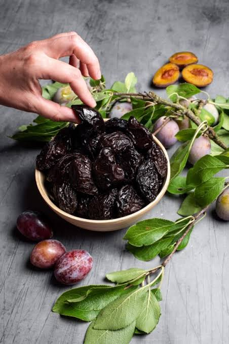

Pruneaux
& prunes d’ente


⟹ Produits du Terroir ⟸
Le pruneau est le fruit séché d’une variété bien particulière de prunier, la prune d’ente. Cultivée depuis des siècles dans le bassin de la Garonne et du Lot, elle est la seule variété autorisée pour produire le célèbre Pruneau d’Agen, protégé par une IGP depuis 2002, dont l’aire géographique inclut une partie du Tarn-et-Garonne.

Le prunier est originaire du Caucase et du Proche-Orient. Les Romains connaissaient déjà la prune séchée, décrite par Pline l’Ancien dans son Histoire naturelle. Selon la tradition, des pruniers de Damas furent rapportés de Syrie à l’époque des croisades, puis multipliés dans les vergers de l’abbaye bénédictine de Clairac, dans la vallée du Lot.
Les moines auraient greffé ces arbres venus d’Orient sur des pruniers locaux. C’est de là que vient le nom de la variété : en ancien français, « ente » désigne la greffe. Ce sont probablement eux aussi qui ont pratiqué les premiers le séchage des prunes, d’abord au soleil puis dans les fours, pour conserver les fruits tout au long de l’année.
Le nom « pruneau d’Agen » ne vient pas du lieu de production mais du lieu d’expédition : Agen était le grand port fluvial d’où les pruneaux descendaient la Garonne jusqu’à Bordeaux, avant d’être exportés dans toute l’Europe. Dès le XVIIe siècle, sa bonne conservation et ses qualités nutritives en font une denrée recherchée, y compris pour l’avitaillement des navires.
L’aire de l’IGP couvre 1 112 communes réparties sur six départements : le Lot-et-Garonne, berceau historique et premier producteur, la Dordogne, la Gironde, le Gers, le Lot et le Tarn-et-Garonne, qui assure environ 6 % de la production. Le cahier des charges impose que la culture des prunes d’ente, leur séchage et la transformation en pruneaux aient lieu dans cette zone.
La transformation demande patience et savoir-faire. Les prunes sont récoltées à pleine maturité, en fin d’été, lorsque leur teneur en sucre est maximale, puis séchées en étuves. Il faut entre 3 et 3,5 kg de prunes fraîches pour obtenir un kilo de pruneaux. Le calibre, exprimé en nombre de fruits aux 500 g, est un indicateur essentiel de qualité : plus la prune était sucrée, plus le pruneau est gros et souple.
Le Tarn-et-Garonne est aussi un grand pays de prunes de table : avec près de 60 % de la production nationale, il est le premier département français pour ces fruits frais. La plus célèbre est la Reine-Claude, baptisée en l’honneur de Claude de France, épouse de François Ier ; la Reine-Claude dorée, verte teintée d’or et couverte de pruine, est récoltée à la main à partir de fin juillet.
Riche en fibres, en sorbitol, en potassium et en antioxydants, le pruneau est apprécié pour ses vertus digestives et son énergie. En cuisine, il se prête aussi bien au salé — lapin, porc, canard, tajines — qu’au sucré : pruneaux à l’Armagnac, fourrés, en crème, en clafoutis ou dans les pâtisseries du Sud-Ouest.
Pruneau mi-cuit : pruneau moins déshydraté, plus moelleux et juteux, à déguster nature.
Pruneaux fourrés : garnis d’une crème de pruneau, parfois parfumée à l’Armagnac : une gourmandise du Sud-Ouest.
Pruneaux à l’Armagnac : macérés dans l’eau-de-vie gasconne, servis en fin de repas ou sur une glace.
Reine-Claude : prune de table fraîche, juteuse et sucrée, dont le Tarn-et-Garonne est le premier producteur.
Confitures et tartes aux prunes : manières traditionnelles de profiter de l’abondance des vergers en été.
Prunes fraîches en été, pruneaux toute l’année : les fruits du prunier se trouvent sur tous les marchés du département.
Vallée de la Garonne autour de Moissac, Castelsarrasin et Valence-d’Agen, cœur des vergers de pruniers du département.
Pays de Lafrançaise coteaux fruitiers où l’on trouve prunes de table et Reine-Claude en vente directe.
Marchés de Montauban pruneaux, pruneaux fourrés et confitures de producteurs locaux.
Lot-et-Garonne voisin berceau du pruneau d’Agen, autour de Clairac et de Villeneuve-sur-Lot, pour prolonger la découverte.